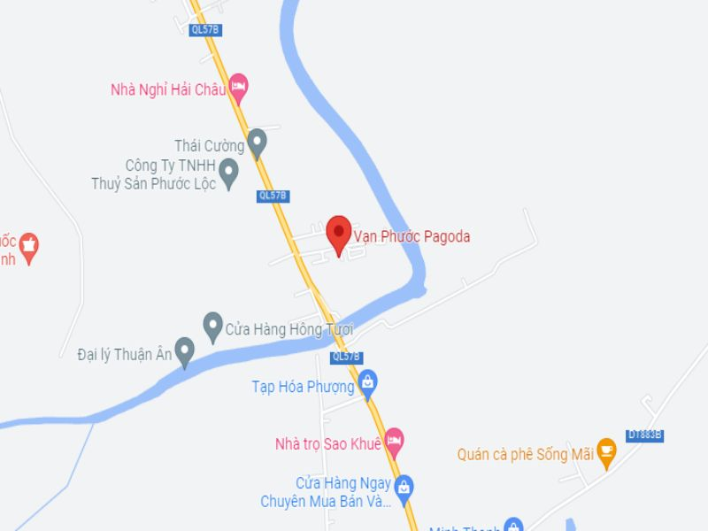

Chùa Vạn Phước ở Bến Tre là một điểm đến tâm linh đông khách nhất hiện nay ở xứ dừa Bến Tre, rất nhiều du khách đã đến hành hương và tham quan Chùa Vạn Phước mỗi khi đi du lịch Bến Tre, đặc biệt là vào những ngày cuối tuần hoặc ngày lễ.
Chùa Vạn Phước là một trong những ngôi chùa lớn nhất của tỉnh Bến Tre, với khuôn viên rộng và kiến trúc độc đáo lôi cuốn du khách, đến với Chùa Vạn Phước bạn sẽ được tận hưởng khung cảnh như chốn thần tiên giữa đầm lầy và những cánh đồng hoa dại khô cằn càng làm nổi bật lên viên ngọc vàng quý giá.
Chùa Vạn Phước nằm tại ấp Bình Chiến, huyện Bình Đại tỉnh Bến Tre. Tọa lạc trên một khu đất rộng 12ha, chùa Vạn Phước được xem như là một trong những ngôi chùa lớn nhất Bến Tre. Nơi đây sở hữu khuôn viên cực kỳ rộng và thoáng đãng với hàng ngàn loại cây chen nhau kết hoa trái quanh năm. Bước vào khuôn viên của ngôi chùa này, bạn sẽ đắm chìm vào sự mát lành, thơm thoang thoảng mùi cỏ dại của của chốn đồng quê.
Chùa Vạn Phước xuất hiện như một viên ngọc quý tỏa sáng lấp lánh giữ những khu rừng già xơ xác không ai quan tâm đến. Giữa một vùng trũng đầm lầy hôi tanh mùi bùn, giữa vùng đất lấp đầy những ngọn cỏ dại cao ngang đầu, lại có một viên ngọc lấp lánh với những công trình kiến trúc, những cảnh đẹp không ngờ. Từ khi khánh thành địa điểm du lịch này, đã có rất nhiều khách du lịch ghé thăm và chiêm bái tượng phật khổng lồ tại đây.
Giống với các kiến trúc cổng Tam Quan khác, cổng Tam Quan tại chùa Vạn Phước cũng bao gồm 3 lối đi được dựng từ 4 cột trụ. Tuy nhiên cổng Tam Quan của chùa Vạn Phước lại vô cùng nổi bật với ánh vàng rực rỡ giữa một vùng cỏ dại hoang vu. Không những vậy, cổng chùa cũng không được lợp mái ngói đỏ mà đổi lại được dựng 2 cột tháp cao như một tòa bảo tháp phiên bản nhỏ. Chiếc cổng Tam Quan rực sáng thu hút ánh nhìn của người qua kẻ lại khi ghé đến huyện Bình Đại này. Mỗi khi ánh hoàng hôn dần buông xuống, từng tia nắng vàng chiếu rọi qua lớp sơn vàng óng ánh của cổng Tam Quan chùa Vạn Phước, làm cho ngôi chùa như đang phát sáng. Thật không ngoa với cái danh “tiên cảnh” xứ dừa Bến Tre.
Chánh điện của Chùa Vạn Phước chính là trái tim của nơi linh thiêng này, là nơi tập trung hoạt động tâm linh và lễ nghi. Kiến trúc của Chánh điện được thiết kế tỉ mỉ, phản ánh được sự trang nghiêm và uy nghi của Phật giáo. Ở khu vực bên ngoài Chánh điện có cấu trúc vững chãi, với các mái chùa cong và đường nét thanh tao, tạo ra một hình ảnh trang nghiêm và đồng thời tôn vinh vẻ đẹp của kiến trúc truyền thống. Khu vực bên trongPHƯỚC tượng Phật và các họa tiết được được chăm chút và trang trí một cách tỉ mỉ, tạo nên không gian linh thiêng và yên bình, thích hợp cho việc cầu nguyện và thiền định.
Phía bên trong khu vực chánh điện sẽ thờ ba vị Phật đồng nhất nhau. Không chỉ vậy, bên trong chánh điện còn bày trí tượng Phật Bổn Sư Thích Ca, tượng Phật A Di Đà. Để tô điểm thêm phần nguy nga tráng lệ, xung quanh chánh điện được bày trí các bức tượng có chạm khắc các vị La Hán thuộc hàng đại để tử loại giỏi của đức Phật.
Phía bên phải của chánh điện là một chánh điện khắc. Tại chánh điện này có thờ các vị Bồ Tát Nghìn Tay Nghìn Mắt, phía xa xa là tổ sư Đạt Ma, là vị sư truyền giáo Phật Giáo vào Việt Nam. Cũng giống với chánh điện, để tô điểm thêm vẻ tráng lệ, xung quanh cũng có những bức tường chạm khắc về cuộc đời của đức Phật. Không gian tại chánh điện vôc ùng uy nghiêm và thanh tịnh.
Điều đặc biệt tại chùa Vạn Phước chính là bức tượng Phật Di Lặc vô cùng to lớn và nổi tiếng tại đây. Bức tượng Phật Di Lặc được chạm khắc vô cùng tinh xảo và tỉ mỉ với kích thước cực kỳ khổng lồ. Được biết, bức tượng có khối lượng lên đến 99 tấn với chiều cao là 12m45 và được làm từ bê tông cốt thép mạ vàng với trị giá được ước tính là 2,27 tỷ đồng. Bức tượng được chạm khắc hình tượng Phật Di Lặc, với khuôn mặt hiền từ, ý nghĩa của bức tượng chính là muốn cổ vũ mọi người sống tích cực hằng ngày và bỏ qua những chuyện làm mình đau khổ, luôn mỉm cười hướng về tương lai phía trước. Toàn bộ bức tượng tại chùa Vạn Phước được mạ vàng óng ánh, với kích thước to lớn bức tượng dễ dàng đón nhận những tia nắng chói chang của mặt trời. Khi ánh nắng buông xuống, bức tượng Phật Di Lặc như đang phát sáng và chiếu rọi xuống nhân gian.
Địa chỉ: QL57B, Ấp Bình Chiến, Bình Đại, Bến Tre.
Giá vé: miễn phí.
Giờ mở cửa: 6:30 - 20:00 hằng ngày.
Chùa Vạn Phước cách trung tâm thành phố Bến Tre khoảng chừng 4km. Nếu bạn muốn di chuyển đến nay có thể đi bằng xe máy hoặc ô tô. Bên cạnh đó, ngôi chùa này cũng cách khu du lịch biển Thừa Đức khoảng chừng 2km. Chùa Vạn Phước với màu vàng sáng rực rỡ cả một vùng Bình Đại ven biển.
Nếu xuất phát từ thành phố Hồ Chí Minh, bạn có thể bắt chuyến xe khách hoặc đi xe máy về huyện Bình Đại theo cung đường sau. Bạn đi theo cung đường cao tốc Bắc - Nam, đến nút giao Thân Cửu Nghĩa, bạn rẽ trái vào cao tốc thành phố Hồ Chí Minh - Trung Lương. Đến đoạn ngã tư giao với Quốc lộ 1A, bạn rẽ phải vào đường QL 1A, di chuyển thêm hơn 4km bạn sẽ gặp bùng binh vào lối rẽ vào Ấp Bắc. Sau đó tại ngã tư giao với Ql 60 bạn rẽ phải, tiếp tục đi theo cung đường QL 60. Tại Ngã tư An Khánh bạn rẽ trái vào huyện Châu Thành. Gặp bùng binh bạn chọn rẽ vào lối thứ 3, sau đó di chuyển thêm 5,4km bạn sẽ gặp thêm 1 bùng binh nữa vào chọn rẽ vào lối thứ 1. Tiếp tục di chuyển thêm 5,6km bạn sẽ gặp được cổng chùa vàng rực của chùa Vạn Phước.
